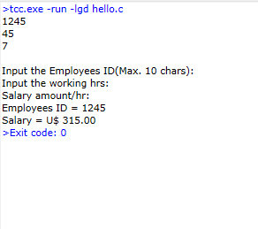

Brython <<
Previous ANSIC
//#include <stdio.h>將sidio.h的檔案內容加進來
//int main()
//{}表示一個區塊的開始和結束
//printf()把框框內的文字列印到螢幕上
//;分號代表句子的結束
//\n表示換行
//return(0);回傳0這個值
#include <stdio.h>
int main()
{
printf("Name :李恆達\n");
printf("DOB :November 07, 2004\n");
printf("Mobile :0933-433-628\n");
return(0);
}
//#include <stdio.h>將sidio.h的檔案內容加進來
//int main()
//{}表示一個區塊的開始和結束
//printf()把框框內的文字列印到螢幕上
//;分號代表句子的結束
//\n表示換行
//return(0);回傳0這個值
#include <stdio.h>
int main(){
printf(" ######\n");
printf(" ## ##\n");
printf(" ## ##\n");
printf(" ## ##\n");
printf(" ################\n");
printf(" ## ##\n");
printf(" ## ##\n");
printf(" ## ##\n");
return(0);
}
#include <stdio.h>
int main()
{
int days, years, weeks;
days = 3333; // Total number of days
// Converts days to years, weeks and days
years = days/365; // Calculate years
weeks = (days % 365)/7; // Calculate weeks
days = days - ((years*365) + (weeks*7)); // Calculate remaining days
// Print the results
printf("Years: %d\n", years);
printf("Weeks: %d\n", weeks);
printf("Days: %d \n", days);
return 0;
}
#include <stdio.h>
int main() {
char id[10]; // Variable to store employee ID (up to 10 characters)
int hour; // Variable to store working hours
double value, salary; // Variables for hourly salary and total salary
// Prompt user for employee ID
printf("Input the Employees ID(Max. 10 chars): ");
scanf("%s", &id);
// Prompt user for working hours
printf("\nInput the working hrs: ");
scanf("%d", &hour);
// Prompt user for hourly salary
printf("\nSalary amount/hr: ");
scanf("%lf", &value);
// Calculate total salary
salary = value * hour;
// Print employee ID and salary
printf("\nEmployees ID = %s\nSalary = U$ %.2lf\n", id, salary);
return 0;
}

#include <stdio.h>
int main() {
int i; // Declare variable for loop counter
printf("Even numbers between 1 to 50 (inclusive):\n");
for (i = 1; i <= 50; i++)
{
if(i%2 == 0) // Check if 'i' is even
{
printf("%d ", i); // Print 'i' if it's even
}
}
return 0;
}
#include <stdio.h>
int main() {
double s=0, j=1, d, i;
// Loop to calculate the series
for(i=1; i<=7; i+=2){
d = (i/j);
s += d;
j = j*2;
}
// Print the result
printf("Value of series: %.2lf\n", s);
return 0;
}
#include <stdio.h>
#define N 10
int main() {
char chr;
printf("\n");
// Loop through ASCII values from 65 ('A') to 122 ('z')
for (chr = 65; chr <= 122; chr = chr + 1) {
// Exclude characters between 'Z' and 'a'
if (chr > 90 && chr < 97)
continue;
printf("[%2d-%c] ", chr, chr);
}
return 0;
}

#include<stdio.h>
int main()
{
int x;
/* Print column names */
printf("Number\tSquare\tCube\n");
printf("=========================\n");
// Loop to calculate and print squares and cubes
for(x=0; x<=20; x++)
printf("%d\t%d\t%d\n", x, x*x, x*x*x);
return 0;
}
#include <stdio.h>
#include <stdint.h>
#include <stdbool.h>
#include <limits.h>
#include <float.h>
int main( void )
{
// Print header for integer data types
printf( "Ranges for integer data types in C\n\n" );
// Print separator line
printf( "------------------------------------------------------------\n");
// Print range for int8_t
printf( "int8_t %20d %20d\n" , SCHAR_MIN , SCHAR_MAX );
// Print range for int16_t
printf( "int16_t %20d %20d\n" , SHRT_MIN , SHRT_MAX );
// Print range for int32_t
printf( "int32_t %20d %20d\n" , INT_MIN , INT_MAX );
// Print range for int64_t
printf( "int64_t %20lld %20lld\n" , LLONG_MIN , LLONG_MAX );
// Print range for uint8_t
printf( "uint8_t %20d %20d\n" , 0 , UCHAR_MAX );
// Print range for uint16_t
printf( "uint16_t %20d %20d\n" , 0 , USHRT_MAX );
// Print range for uint32_t
printf( "uint32_t %20d %20u\n" , 0 , UINT_MAX );
// Print range for uint64_t
printf( "uint64_t %20d %20llu\n" , 0 , ULLONG_MAX );
// Print separator line
printf( "\n" );
// Print separator line
printf( "============================================================\n\n");
// Print header for real number data types
printf( "Ranges for real number data types in C\n\n" );
// Print separator line
printf( "------------------------------------------------------------\n");
// Print range for float
printf( "float %14.7g %14.7g\n" , FLT_MIN , FLT_MAX );
// Print range for double
printf( "double %14.7g %14.7g\n" , DBL_MIN , DBL_MAX );
// Print range for long double
printf( "long double %14.7Lg %14.7Lg\n" , LDBL_MIN , LDBL_MAX );
// Print separator line
printf( "\n" );
return 0;
}
Brython <<
Previous